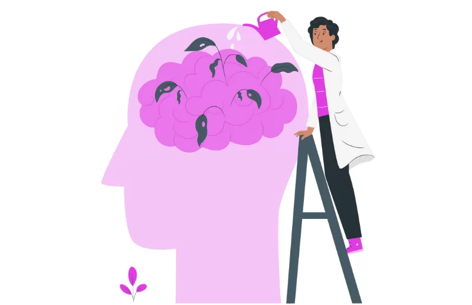

Neuropsicologia
Avaliação e intervenção especializadas nas funções cognitivas e comportamentais
A neuropsicologia é uma área da psicologia dedicada ao estudo das relações entre o funcionamento cerebral, os processos cognitivos e o comportamento humano. Por meio de avaliações especializadas, essa disciplina busca identificar alterações cognitivas, auxiliar no diagnóstico de condições neurológicas e propor estratégias de intervenção que favoreçam a qualidade de vida do paciente
Atuação do neuropsicólogo
Avaliação neuropsicológica: Aplicação de testes padronizados para investigar funções como memória, atenção, linguagem, percepção, raciocínio e funções executivas.
Apoio ao diagnóstico: Colaboração com médicos e outros profissionais da saúde no diagnóstico de transtornos neurológicos e psiquiátricos.
Orientação e intervenção: Elaboração de planos terapêuticos e de reabilitação cognitiva, visando potencializar as capacidades preservadas e minimizar os impactos das disfunções identificadas.
Principais indicações
- Transtornos do neurodesenvolvimento (TDAH, dislexia, TEA).
- Dificuldades de aprendizagem.
- Lesões cerebrais traumáticas.
- Acidentes vasculares cerebrais (AVC).
- Doenças neurodegenerativas (Alzheimer, Parkinson).
- Alterações cognitivas relacionadas ao envelhecimento.
Benefícios da avaliação neuropsicológica
- Identificação precisa das habilidades cognitivas preservadas e comprometidas.
- Apoio no diagnóstico diferencial entre quadros psiquiátricos e neurológicos.
- Orientação para familiares, educadores e profissionais de saúde sobre as melhores estratégias de apoio.
- Monitoramento da evolução clínica e da eficácia de tratamentos.
A importância da intervenção precoce
A neuropsicologia destaca-se pelo caráter preventivo e terapêutico. Quanto mais cedo forem identificadas as alterações cognitivas e comportamentais, mais eficaz será a intervenção, contribuindo para a promoção da autonomia, da funcionalidade e da qualidade de vida do paciente.